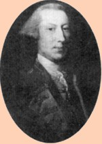

by
Stefan Bielinski
Gabriel Christie was a career British army officer who was stationed in Albany during the Seven Years War. He may have been born in 1722.
He was a Captain serving in Albany during the summer of 1757 when he engaged in a jurisdictional dispute with Albany sheriff Abraham Yates, Jr.
About that time, he married Sarah Stevenson, the daughter of an Albany merchant and official. Their son, Napier, was baptized in Albany in 1758.
After the war, he established a settlement at Isle Aux Noir and held other lands along the Richelieu River. In 1765, purchased Isle La Motte. He had a home in Montreal and owned other Canadian properties as well.
Military duties took him to Florida, Barbadoes, and Antigua.
Did he participate in the British invasions from Canada in 1776 and 1777?
He died in Montreal in November 1799.
While not really a resident of Albany itself, his military duties and marital connection to the Stevensons prompt us to profile his life. Sometimes he is confused with a contemporary - officeholder Gabriel Christie of Maryland.
notes
 Sources: The life of Gabriel Christie has not been assigned a CAP biography number. This profile is derived chiefly from external sources as his name is mostly absent from the community-based record.
Sources: The life of Gabriel Christie has not been assigned a CAP biography number. This profile is derived chiefly from external sources as his name is mostly absent from the community-based record.
Poor quality copy of a portrait of Christie taken from an unattributed Internet source.
privately posted: 2/25/04; updated 8/11/11